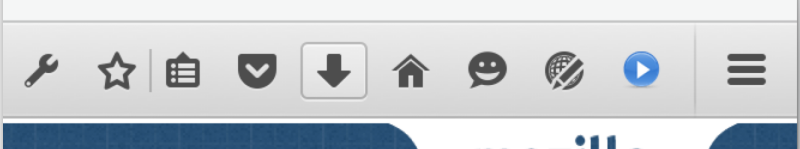
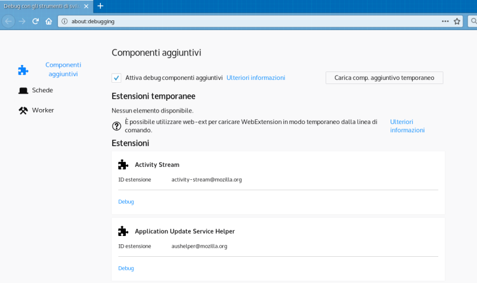
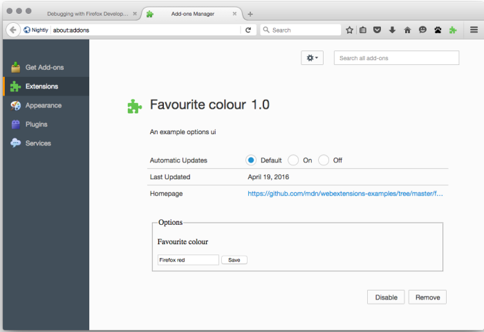

Discover the new APIs based from Chrome to create extensions
Go Faster or System addons (https://wiki.mozilla.org/Firefox/Go_Faster) and Test Pilot (http://testpilot.firefox.com).
These projects show how the addons are important in Firefox.
For addons developers is important to show how the APIs are powerful.
40% of users have add-ons
32000 add-ons
19000 extension developers
15 million monthly users on AMO
XUL is a XML technology used for the Firefox interface.
XPCOM is a JavaScript framework to interact with XUL with an APIs differents from the classic HTML5.
That technologies are used internally so they can change from a release to another!
For a Web Developer is difficult to learn these technology respect the classic HTML, CSS and JavaScript.
This is the ID card of an extension and the data are the same also of a Greasemonkey script because they are Content Scripts!{"manifest_version": 2,"name": "Borderify","version": "1.0","description": "Adds a solid red [...]","icons": { [...] }"content_scripts": [ {"matches": ["*://*.mozilla.org/*"],"js": ["borderify.js"]} ]}
WebExtensions often need to maintain long-term state, or perform long-term operations, independently of the lifetime of any particular web pages or browser windows. That's what background scripts are for.
Background scripts are loaded as soon as the extension is loaded and stay loaded until the extension is disabled or uninstalled. You can use any of the WebExtension APIs in the script, as long as you have requested the necessary permissions.
Use content scripts to access and manipulate web pages. Content scripts are loaded into web pages and run in the context of that particular page.
Content scripts can see and manipulate the page's DOM, just like normal scripts loaded by the page.
A browser action is a button you can add to the browser toolbar. Users can click the button to interact with your extension.
You can optionally define a popup for the button using HTML, CSS, and JavaScript.

Web accessible resources are resources such as images, HTML, CSS, JavaScript, that you include in the extension and want to make accessible to content scripts and page scripts. Resources which are made web-accessible can be referenced by page scripts and content scripts using a special URI scheme.


https://github.com/mozilla/web-ext
Command line tool to help build, run, watcher, and test web extensions.
Run an extension from cli, linting, validation and packaging.
web-ext run -s /path/extension/ --firefox-binary=/path/firefoxweb-ext build -s /path/extension/https://github.com/Mte90/Script/blob/master/pack-ext.py
Package the file as Zip package for Chrome and Xpi for Firefox.
pack-ext.py ./